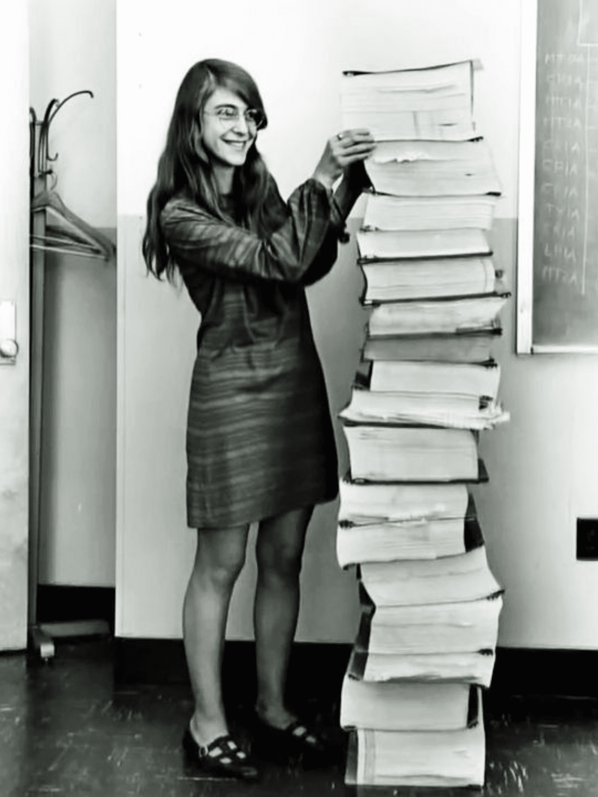
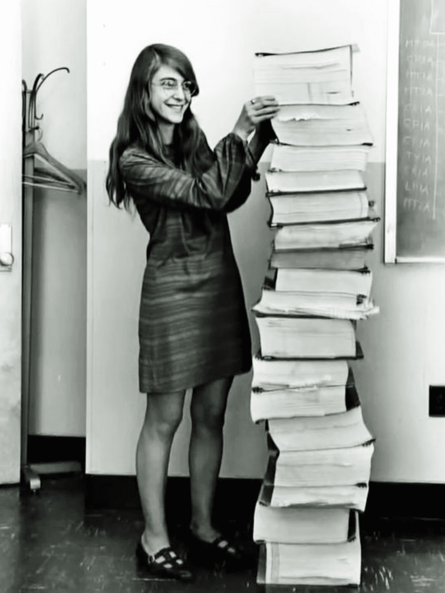
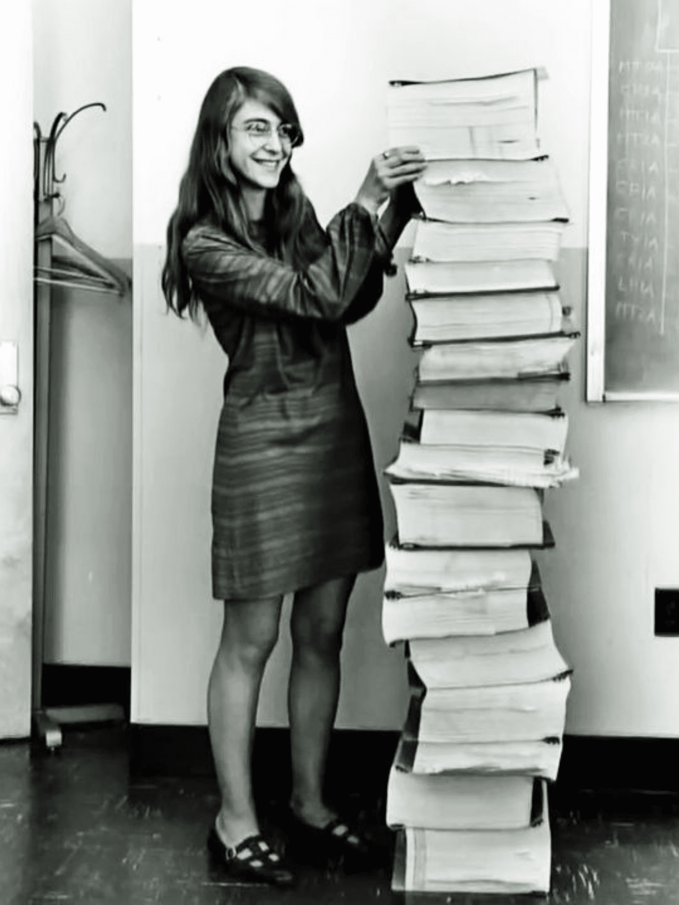

En los Estados Unidos, el número de mujeres presentes en estudios de pregrado en informática, en cuadros de la tecnología de la información alcanzó su punto máximo a mediados de la década de 1980. Sobre todo en informática, ha habido una caída dramática en el número de mujeres que consiguen el título de grado. Las cifras recientes de la asociación de investigación de informática Taulbee de la encuesta indican que el número cayó recientemente a por debajo del 12%, viniendo de casi un 40% a mediados de los 80. Una situación similar se observa en Canadá, donde la disminución de mujeres en la informática es evidente. La investigación ha demostrado que muchos conceptos erróneos sobre la computación persisten y pueden desalentar a las mujeres. Uno de los mayores malentendidos con la informática es el "factor geek" o del "maquinitas chiflado asocial", Se cree que un estudiante de universidad ha de pasarse todo el día trabajando delante de un teclado y ordenador . El "factor geek" afecta tanto a chicas como a chicas de secundaria, pero parece producir más de un efecto negativo sobre las estudiantes.

| 1843 | Ada lavelace |
| 1892 | Henrietta Swan Leavitt |
| 1942 | Hedy Lamarr |
| 1946 | Jean Jennings Bartik, Betty Snyder Holberton, Frances Bilas Spence, Kathleen McNulty Mauchly Antonelli, Marlyn Wescoff Meltzer y Ruth Lichterman Teitelbaum |
| 1949 | Grace Hopper, Ángela Ruiz Robles |
| 1959 | Mary Allen Wilkes |
| 1962 | Jean E. Sammet |
| 1965 | Mary Allen Wilkes |
| 1968 | Barbara H. Liskov |
| 1969 | Margaret Hamilton |
| 1972 | Karen Spärck Jones |
| 1974 | Jean E. Sammet, |
| 1978 | Carol Shaw |
| 1982 | Carol Shaw |
| 1984 | Roberta Williams, Susan Kare |
| 1993 | Shafi Goldwasser, Barbara Liskov |
| 1994 | Sally Floyd |
| 1996 | Xiaoyuan Tu |